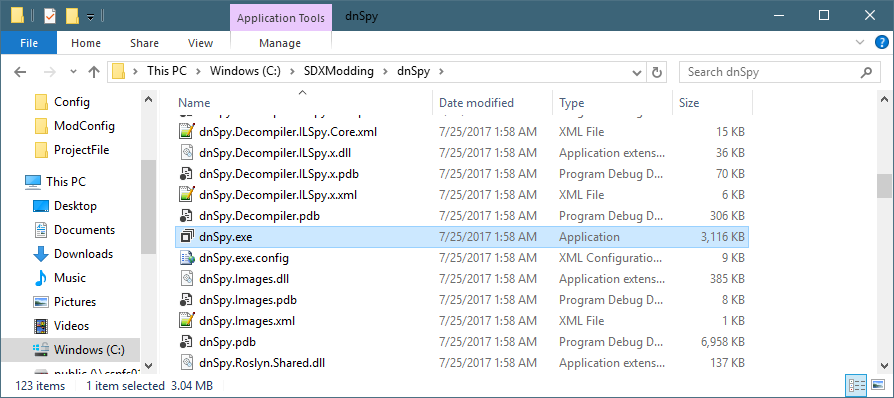
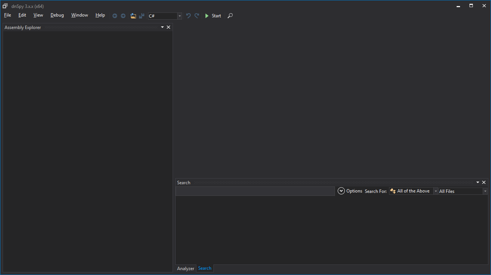
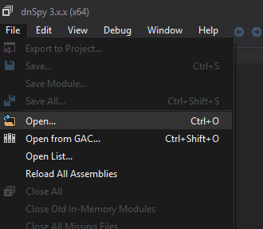
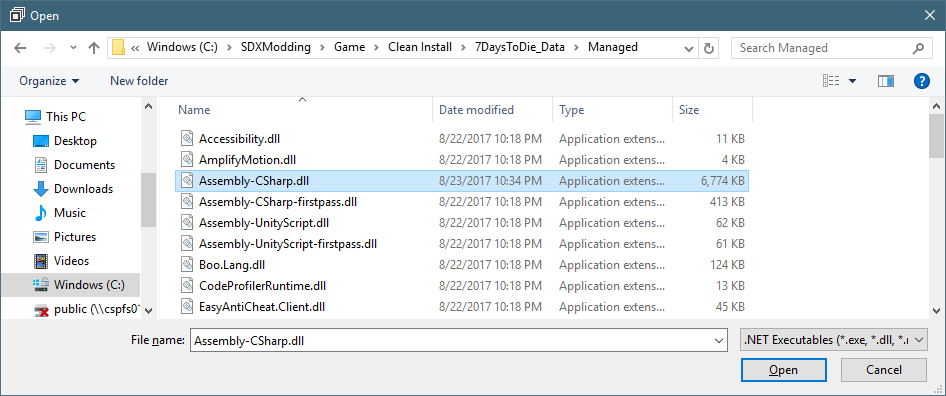
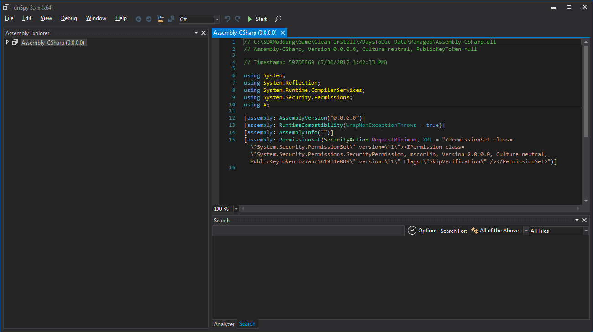
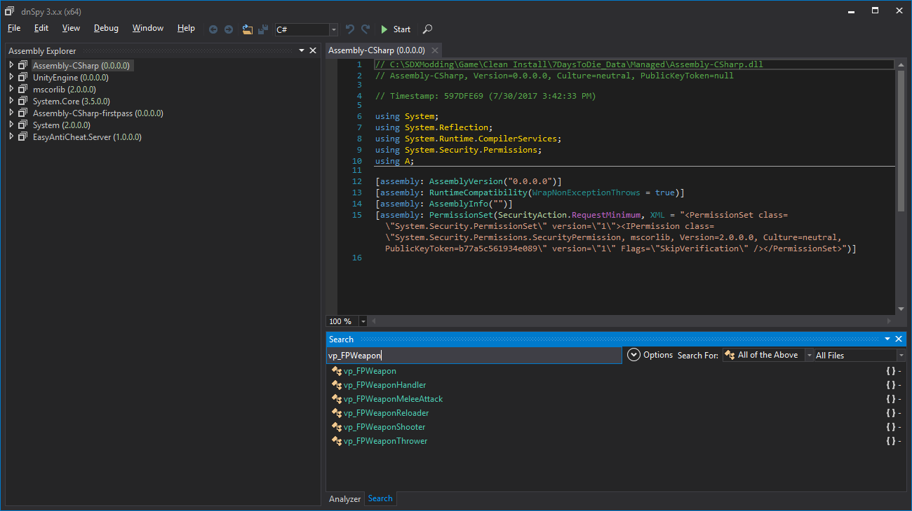
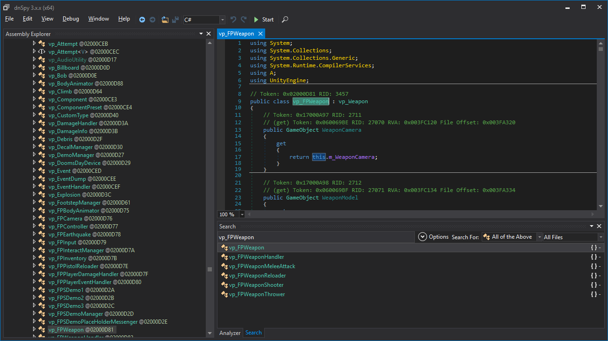
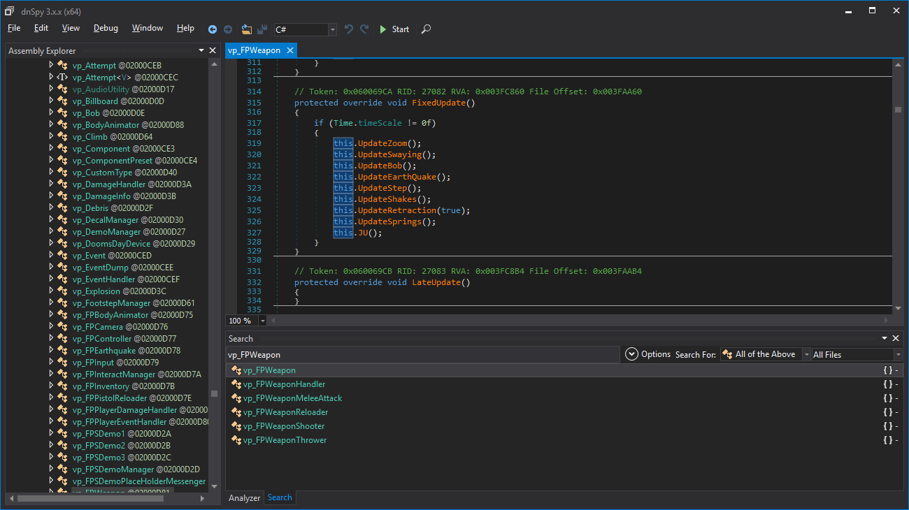
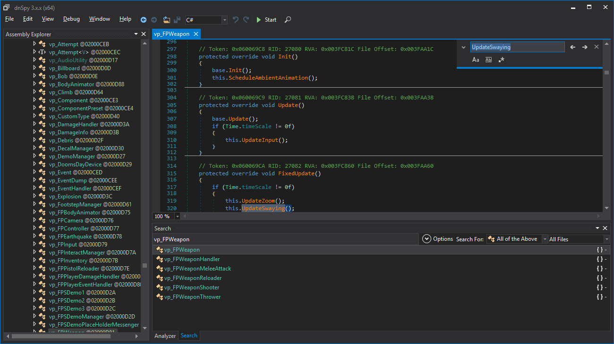
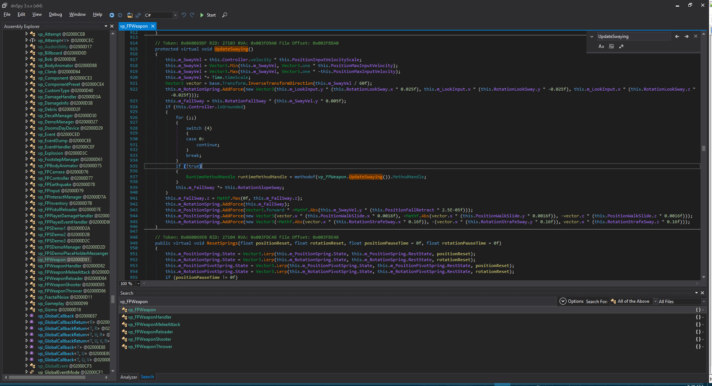

Let's take a look at the code in the Assembly-CSharp.dll, in order to know what changes are available.
For this example, we are going to use dnSpy, which is included as part of the SDX Modding Kit.
In C:\SDXModding\dnSpy, double click on the dnspy.exe

When it first starts, you may see it populate with a bunch of default libraries. If this is confusing for you, click on the File menu, then go to "Close All" before continuing this tutorial.

Now we want to open up the Assembly-CSharp.dll, and we'll use our Clean Install copy of the game to look at the file. We won't be making any changes in the tool, but rather we are only looking at the class.
Click on the File menu, then click on Open

Navigate using the Open dialog box to C:\SDXModding\Game\Clean install\7DaysToDie_Data\Managed, or whoever the Assembly-CSharp.dll is.

Clicking open will open up the Assembly-CSharp.dll:

Remember that class name we pointed on? It was called: vp_FPWeapon
Click on the Magnifying Glass, next to the Start button.

and enter in the vp_FPWeaon in the search dialog box. You'll notice that under the Assembly Explorer, other libraries have been loaded. dnSpy will open up references that the searched for objects use, either in code or linking.
Click on the first entry in the search list that matches exactly the string we want. The class will load up:

in the vp_FPWeapon window, the class will be loaded. You can scroll through it, taking a look at its structure.
In ZehMatt's posting, one of his code changes was for the FixedUpdate() method. Scroll down in the vp_FPWeaon tab until you find it.

The code in the fix shows this:
protected override void FixedUpdate() { if (Time.timeScale != 0f) { this.UpdateZoom(); this.UpdateEarthQuake(); this.UpdateStep(); this.UpdateShakes(); this.UpdateRetraction(true); this.MJ(); } } |
Let's compare them:
Moddified |
Vanilla |
protected override void FixedUpdate() { if (Time.timeScale != 0f) { this.UpdateZoom(); this.UpdateEarthQuake(); this.UpdateStep(); this.UpdateShakes(); this.UpdateRetraction(true); this.MJ(); } } |
protected override void FixedUpdate() |
The highlighted values are the values that is being removed from the method. Hmm.. I wonder where they went.
Let's look at the Update() method
Modified |
Vanilla |
protected override void Update() { base.Update(); if (Time.timeScale != 0f) { this.UpdateInput(); this.UpdateSwaying(); this.UpdateBob(); this.UpdateSprings(); } } |
protected override void Update() |
There they are! ZehMatt moved those vanilla files to the Update() method.
In his code posting, he referenced two other methods: UpdateSwaying() and UpdateBob().
Let's find those. In the vp_Weaon tab, press Ctrl-F to bring up a search function, and enter in "UpdateSaying"

Press the F3 button to search for the next instance.
The next search result is the actual function we want

So this is a much bigger blurb, and not something we can easily compare in this tutorial. However, you can use the tool WinMerge to compare the code snippets.
Created with the Personal Edition of HelpNDoc: Easily create iPhone documentation